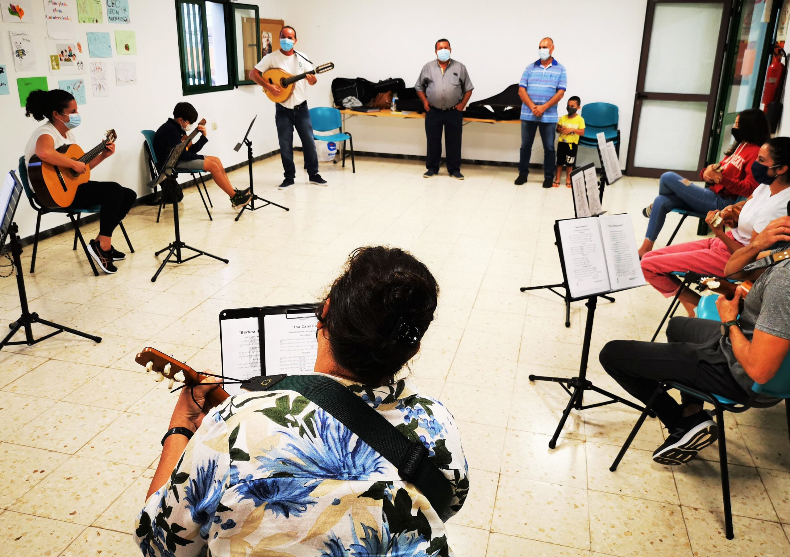

Taller Musical COMPOSICION
Es un espacio destinado a la asistencia y promoción de la salud que ofrece la música y el sonido como principal medio terapéutico.
El equipo está conformado por profesionales formados y formadas en Musicoterapia, dedicados/as a pensar y llevar a cabo el accionar terapéutico y musical tanto en niños, adolescentes y adultos, como así también atender a las demandas de diversos grupos sociales de nuestra comunidad.
Buscamos sostener un trabajo clínico alojando diversas formas de práctica musicoterapéutica, fomentando un espacio de investigación y reflexión a través del diálogo, el intercambio, la supervisión y la formación contínua.
